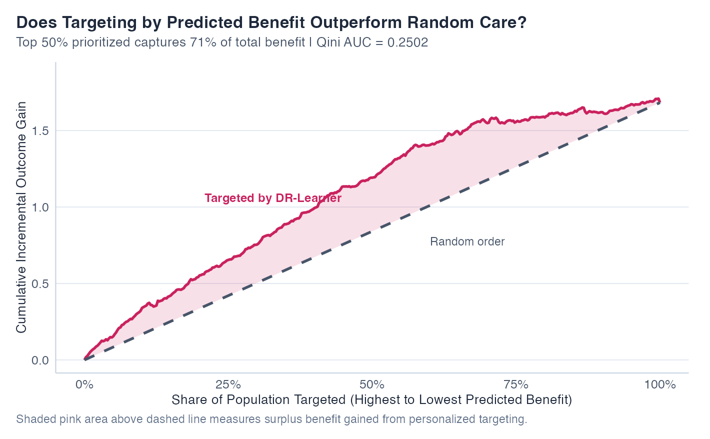

Not every real-world decision is binary “treat everyone vs. treat no one.” Often you want to know:
-
Realistic Dose Shifts (
shift(),scale_tx()): What would happen if everyone received+1unit higher dose—or90%of their current dose—without extrapolating to impossible extremes? -
Who Benefits Most (
fit_cate()): Which subgroups gain the largest benefit from treatment, and how much uplift do we capture by prioritizing high-benefit individuals?
1. Realistic Continuous Policies (shift() &
scale_tx())
Following Díaz et al. (2021), Modified Treatment Policies replace
hypothetical “set everyone to max dose” questions with realistic
individual shifts: additive policies
(shift()) or multiplicative reductions
(scale_tx()). Internally, tidytmle estimates
the induced density ratio nonparametrically using stacked
cross-validated classification without assuming normality:
library(tidytmle)
df_cont <- sim_causal_cohort(
n = 350,
outcome_type = "continuous",
treatment_type = "continuous",
seed = 202
)
truth_cont <- attr(df_cont, "truth")
# Additive shift (+1 unit)
fit_shift <- tmle_spec(
outcome = y,
treatment = a,
covariates = c(age, sex, starts_with("lab_")),
estimand = shift(1.0)
) |>
set_resamples(v_folds = 4L) |>
fit(data = df_cont)
# Multiplicative policy (90% of current dose)
fit_scale <- tmle_spec(
outcome = y,
treatment = a,
covariates = c(age, sex, starts_with("lab_")),
estimand = scale_tx(0.9)
) |>
set_resamples(v_folds = 4L) |>
fit(data = df_cont)
dplyr::bind_rows(tidy(fit_shift), tidy(fit_scale)) |>
dplyr::mutate(true_value = c(truth_cont$true_shift_1, truth_cont$true_scale_09))
#> # A tibble: 2 × 9
#> estimand term estimate std.error statistic p.value conf.low
#> <chr> <chr> <dbl> <dbl> <dbl> <dbl> <dbl>
#> 1 shift(1) shift(… 4.83 0.214 22.6 5.10e-113 4.41
#> 2 scale_tx(0.9) scale_… 3.67 0.125 29.3 7.78e-189 3.43
#> # ℹ 2 more variables: conf.high <dbl>, true_value <dbl>
check_tmle(fit_shift)
#>
#> ── TMLE Causal Health Audit (3/4 Passed) ──
#>
#> ✔ Targeting Convergence (mean EIF = -9.51e-14): Bias-removal step converged cleanly (targeting shift = +0.2184, epsilon = 0.0653).
#> ✔ Comparison Overlap (Positivity) (0.0% capped (max r = 21.9)): 0.0% of density ratios were capped at upper bound 21.92.
#> ✖ Individual Influence (top obs = 37.2% variance): Row 33 alone drives 37.2% of total EIF variance (> 10% caution threshold).
#> Suggested next step: Inspect outlier row via autoplot(fit, type =
#> 'eif') or dplyr::slice_max(augment(fit), .eif_leverage, n = 5).
#> ✔ Model Learning Quality (Q R2 = 0.755): Cross-validated outcome Super Learner captured real structure (Q R2 = 0.755).
autoplot(fit_shift, type = "overlap")
2. Discovering Who Benefits Most (fit_cate())
Even when an average effect looks modest, treatment often helps some
individuals substantially while doing little for others. Kennedy’s
(2023) Doubly Robust (DR) Learner turns each
individual’s Efficient Influence Function signal
into a cross-fitted target for any tidymodels regression
workflow:
fit_cate() learns individualized effects
,
tests formally whether heterogeneity is real via Chernozhukov et al.’s
(2018) Best Linear Projection (tidy(cate)), predicts on new
patients (predict(cate, new_data)), and measures targeting
uplift via Qini curves (qini_auc(),
autoplot(cate, type = "qini")):
df_het <- sim_causal_cohort(n = 400, outcome_type = "continuous", seed = 303)
truth_het <- attr(df_het, "truth")
fit_ate <- tmle_spec(
outcome = y,
treatment = a,
covariates = c(age, sex, starts_with("lab_"))
) |>
set_resamples(v_folds = 4L) |>
fit(data = df_het)
cate <- fit_cate(fit_ate, covariates = c(age, sex, lab_1, lab_2, lab_3), v_folds = 4L)
tidy(cate)
#> # A tibble: 2 × 7
#> term estimate std.error statistic p.value conf.low conf.high
#> <chr> <dbl> <dbl> <dbl> <dbl> <dbl> <dbl>
#> 1 ATE (BLP In… 1.68 0.125 13.5 2.18e-34 1.44 1.93
#> 2 Heterogenei… 0.980 0.134 7.33 1.32e-12 0.717 1.24
qini_auc(cate)
#> # A tibble: 2 × 3
#> .metric .estimator .estimate
#> <chr> <chr> <dbl>
#> 1 qini_auc standard 0.250
#> 2 auuc standard 1.09
# Out-of-fold accuracy vs true individual treatment effects
aug_cate <- augment(cate)
cor(aug_cate$.cate, truth_het$true_cate)
#> [1] 0.7648441
# Score individualized benefit for new patients
predict(cate, new_data = head(df_het, 5L))
#> # A tibble: 5 × 1
#> .pred
#> <dbl>
#> 1 0.344
#> 2 1.77
#> 3 3.19
#> 4 3.79
#> 5 -0.623
autoplot(cate, type = "cate")
autoplot(cate, type = "qini")